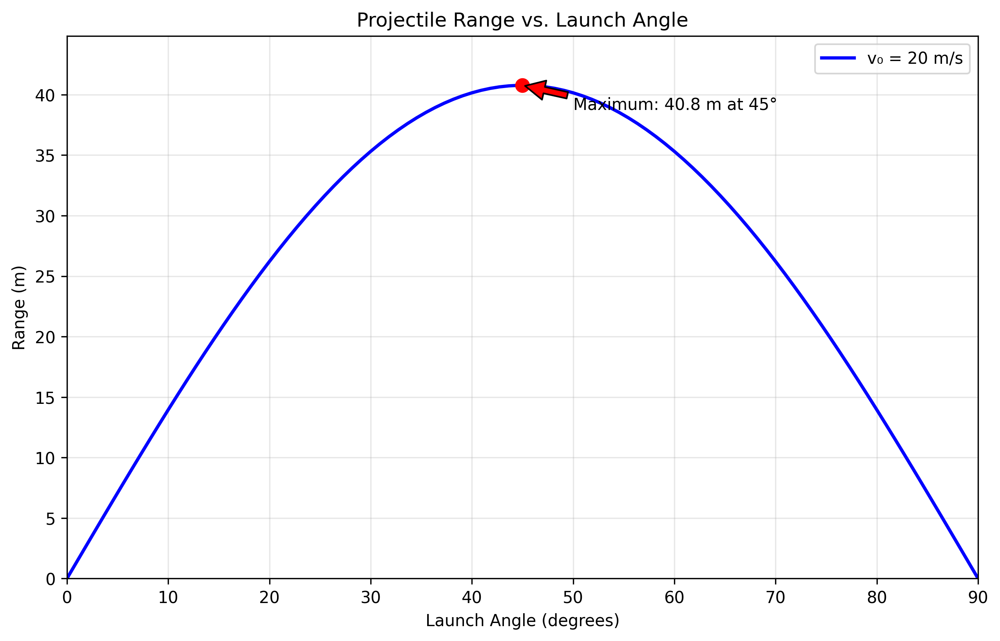
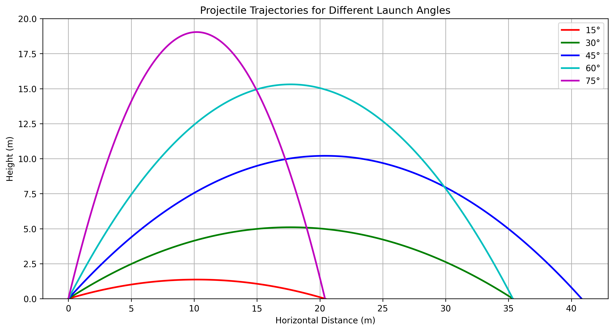
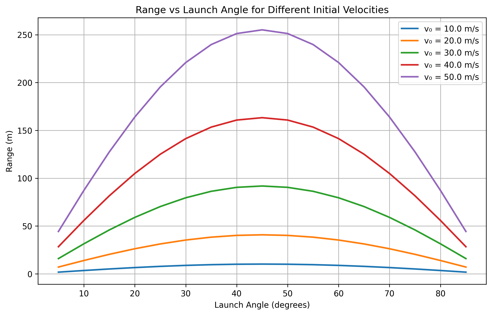
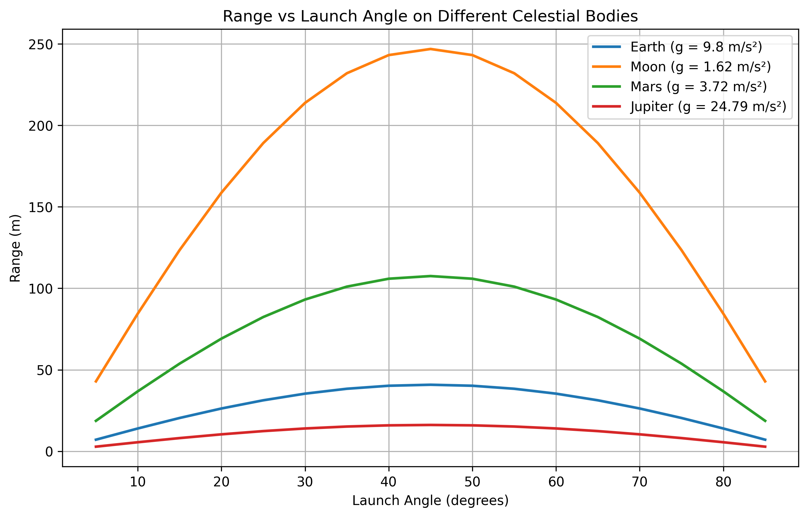

Problem 1
Investigating the Range as a Function of the Angle of Projection
1. Theoretical Foundation
Governing Equations of Motion
Projectile motion can be analyzed using Newton's laws of motion. Assuming no air resistance, the motion can be decomposed into horizontal and vertical components:
Equations of Motion:
- Horizontal motion: $$ x(t) = v_0 \cos(\theta) t $$
- Vertical motion: $$ y(t) = v_0 \sin(\theta) t - \frac{1}{2} g t^2 $$
where:
- \(v_0\) is the initial velocity,
- \(\theta\) is the launch angle,
- \(g\) is the acceleration due to gravity,
- \(t\) is the time.
Time of Flight:
Setting \( y(t) = 0 \) to find the total flight time: $$ t_f = \frac{2 v_0 \sin(\theta)}{g} $$
Range Formula:
The horizontal range \(R\) is given by:
This equation shows that the range is maximized at \(\theta = 45°\), assuming other parameters remain constant.
Mathematical proof for maximum range: Taking the derivative with respect to \(\theta\): $$ \frac{dR}{d\theta} = \frac{v_0^2}{g} \cdot 2\cos(2\theta) = 0 $$
This gives \(\cos(2\theta) = 0\), which means \(2\theta = 90°\), therefore \(\theta = 45°\).
2. Analysis of the Range
Influence of Initial Conditions
- Initial velocity (\( v_0 \)): Increasing \( v_0 \) increases the range quadratically.
- Gravitational acceleration (\( g \)): Higher \( g \) reduces the range, as the projectile falls more quickly.
- Launch angle (\( \theta \)): The range follows a symmetric pattern, peaking at \( 45^\circ \).
Graphical Representation
The relationship between launch angle and range can be visualized using the theoretical formula. The simulation shows the characteristic parabolic relationship with maximum range at 45°.
Key observations:
- Range increases from 0° to 45°
- Range decreases from 45° to 90°
- Symmetric angles (e.g., 30° and 60°) produce equal ranges
- At 45°, \(\sin(2\theta) = \sin(90°) = 1\), giving maximum range

Additional Analysis Plots:
The following visualizations provide deeper insights into projectile motion:
-
Range vs Angle for Different Velocities: Shows how initial velocity affects the range-angle relationship
-
Trajectories for Different Angles: Displays actual flight paths for various launch angles
-
Effect of Gravity: Compares projectile motion on different celestial bodies
  
3. Practical Applications
- Sports: Understanding projectile motion helps in optimizing the throwing angles in sports like basketball, soccer, and javelin.
- Engineering: Used in ballistics, military applications, and designing trajectories for rockets and missiles.
- Astrophysics: Used to model celestial body trajectories and space exploration missions.
4. Implementation
A numerical simulation can further analyze cases involving air resistance. Incorporating drag force leads to differential equations that require numerical methods (e.g., Runge-Kutta) to solve.
Example: Adding Air Resistance
Real projectile motion includes air resistance, which significantly affects the trajectory. The drag force is proportional to velocity squared:
This leads to coupled differential equations: \(\(m \frac{d^2 x}{dt^2} = -k v_x \sqrt{v_x^2 + v_y^2}\)\) \(\(m \frac{d^2 y}{dt^2} = -mg - k v_y \sqrt{v_x^2 + v_y^2}\)\)
Effects of air resistance: - Reduces maximum range - Optimal angle becomes less than 45° - Trajectory becomes asymmetric (steeper descent) - Range no longer quadratic in initial velocity
These equations require numerical methods (Runge-Kutta) for solution, as implemented in our simulation code.
5. Limitations and Further Considerations
- Air resistance: Causes asymmetry and reduces range.
- Uneven terrain: Requires solving for complex boundary conditions.
- Wind effects: Affects trajectory unpredictably.
Future work could involve incorporating machine learning techniques to predict projectile trajectories in complex environments.
Conclusion
Projectile motion demonstrates rich mathematical and physical insights. While the idealized model provides a good approximation, real-world adaptations require numerical solutions to account for non-ideal conditions.